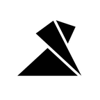
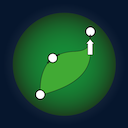
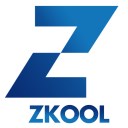
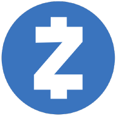
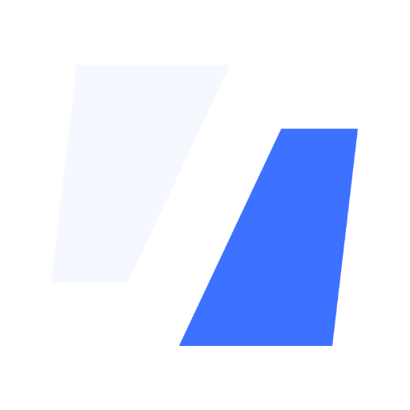

14 known causes · each dated and sourced · never asks for your seed
My wallet shows zero.
Usually the ZEC is still there. Two taps to find out why, and what to do.





 Zcash wallets
Zcash wallets
Your seed phrase goes only into a wallet app on your own device. Never into a website, a form, a chat, or to anyone offering help. This page never asks for it.
- What happened
- Your wallet
- What to do
Have a transaction ID for the funds? Check it here to see where the chain says they went.